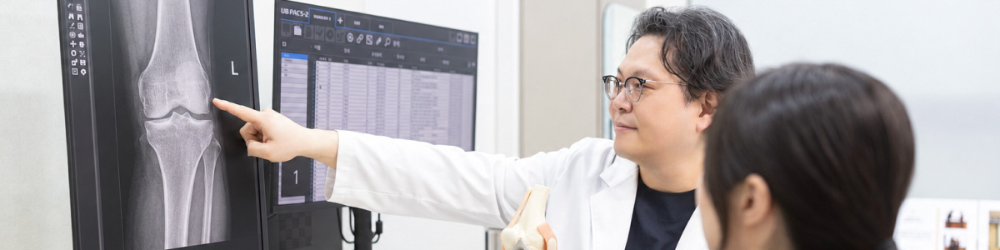

약물치료
진통·소염제를 활용하여 무릎 관절의 통증과 염증을 완화합니다.
무릎을 보호하는 연골이 점차 닳으며 관절 사이의 마찰이 커져
통증과 뻣뻣함이 반복적으로 나타날 수 있습니다.

나이가 들면서 연골의 탄력과 회복력이 감소하고, 반복되는 움직임으로 무릎의 부담이 쌓이면 관절의 마모가 점차 빨라질 수 있습니다.
연골이 얇아져 뼈 사이의 마찰이 증가하면 염증과 통증이 발생하고, 무릎이 뻣뻣하거나 움직임이 불편해질 수 있습니다.
관절 내 연골이 닳으며 통증이 심해지고
오래 쉬었다가 움직이면 무릎이 굳은 듯 느껴질 수 있습니다.
통증의 정도와 진행 상태를 살펴 근육을 강화하고
관절의 안정성과 움직임을 유지하도록 돕습니다.
진통·소염제를 활용하여 무릎 관절의 통증과 염증을 완화합니다.

굳어진 관절의 움직임을 부드럽게 하고 무릎 주변 근육의 균형과 기능 회복을 돕습니다.

관절의 염증과 통증 상태를 확인해 적용하며 움직임의 불편함을 줄이는 데 도움을 줍니다.
운동을 모두 중단하기보다는 통증과 붓기를 고려해 종류와 강도를 조절하는 경우가 많습니다. 상태에 맞는 저충격 운동과 근력 운동을 안내받으세요.
통증 완화를 위한 치료와 연골 회복은 같은 의미가 아닙니다. 치료별 목적과 근거, 기대할 수 있는 효과 및 한계를 상담해야 하며 연골 재생을 일률적으로 보장할 수 없습니다.
통증과 기능 저하가 일상생활에 큰 영향을 주고 적절한 비수술치료로 충분히 조절되지 않는지 등을 평가합니다. 영상 소견과 전신 상태도 함께 고려합니다.